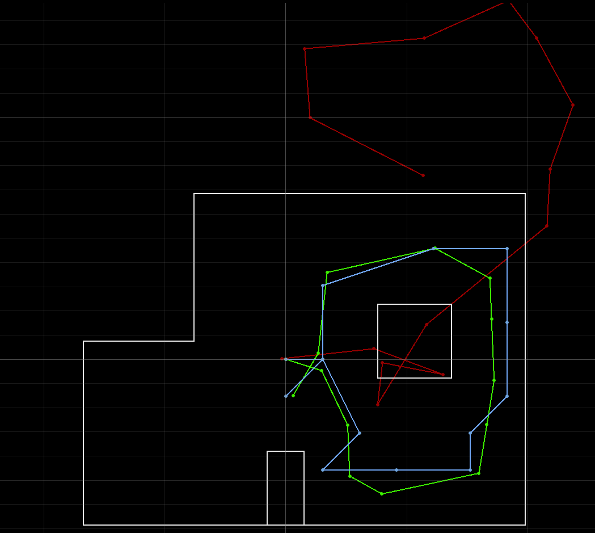

Lab 10
In this lab, I had to implement a bayesian filter by implementing various python functions that would run in a simulator of my real robot’s movements.
The way I thought about the implementation of these functions was by working backward.
Designing Filter
The basic bayes filter works like this
for all x_t do
bel_bar(x_t) = sum(p(x_t | u_t,x_t-1)*bel(x_t-1))
bel(x_t) = eta*(p(z_t | x_t)*bel_bar(x_t-1))
Therefore, the prediction step is
for all x_t do
bel_bar(x_t) = sum(p(x_t | u_t,x_t-1)*bel(x_t-1))
Prediction Step
In the case of the robot, \(p(x_t | u_t,x_{t-1})\) is the motion model explained later. \(x_t\) is each position in the graph which is an element in a 12 x 9 x 18 array. Therefore, the loop is through each index of the array and getting the position as
mapper.from_map(x_curr,y,_curr,z,curr).
To calculate the sum of the prediction expression, we need to loop through the array again for each \(x_t\) and add the prediction expression to the bel_bar value at the current value’s index like this, .
bel_bar[x_cur][y_cur][a_cur] += odom_motion_model(cur_pose, prev_pose, actual_u) * loc.bel[x_prev][y_prev][a_prev]
By looking at Aparajito Saha and Anya Prabowo’s code, I found that a way to speed the code up is to reverse the two iterations and iterate through \(x_{t-1}\) first and then \(x_{t}\). By doing this, if \(bel(x_{t-1}) < 0.0001\), then \(p(x_t | u_t, x_{t-1}) \approx 0\), so it doesn’t need to be evaluated. These assumptions result in this code:
actual_u = compute_control(cur_odom, prev_odom)
x_s, y_s, a_s = (mapper.MAX_CELLS_X,mapper.MAX_CELLS_Y,mapper.MAX_CELLS_A)
bel_bar = np.zeros([x_s,y_s,a_s])
for x_prev in range(x_s):
for y_prev in range(y_s):
for a_prev in range(a_s):
cur_pose = np.array([x_prev, y_prev, a_prev])
if loc.bel[x_prev][y_prev][a_prev] > 0.0001:
for x_cur in range(x_s):
for y_cur in range(y_s):
for a_cur in range(a_s):
prev_pose = np.array(mapper.from_map(x_prev, y_prev, a_prev))
cur_pose = np.array(mapper.from_map(x_cur, y_cur, a_cur))
bel_bar[x_cur][y_cur][a_cur] += odom_motion_model(cur_pose, prev_pose, actual_u) * loc.bel[x_prev][y_prev][a_prev]
Update Step
The update step is
for all x_t do
bel(x_t) = eta*(p(z_t | x_t)*bel_bar(x_t-1))
To do this, once again \(x_t\) was looped through. The sensor model explained later is \(p(z_t | x_t) = sensor\_model(\text{true z at } x_t)\) Therefore, since getting the expected distance values at \(x_t \text{ was } mapper.get\_views(x_t)\), then the code was
bel = loc.bel
eta = 1
x_s, y_s, a_s = (mapper.MAX_CELLS_X,mapper.MAX_CELLS_Y,mapper.MAX_CELLS_A)
for x_cur in range(x_s):
for y_cur in range(y_s):
for a_cur in range(a_s):
sens_model = np.prod(sensor_model(mapper.get_views(x_cur, y_cur, a_cur)))
bel[x_cur][y_cur][a_cur] = eta*sens_model * loc.bel_bar[x_cur][y_cur][a_cur]
loc.bel = np.true_divide(bel,np.sum(bel))
The eta value was chosen as 1 as the values were normalized at the end of the function thus not needing a scaling factor.
Motion Model
Now for the motion model or \(p(x_t | u_t, x_{t-1})\). Assuming that the motion noise is gaussian, the probability of a certain position is simply
\[p(x_t | u_t, x_{t-1}) = \sigma(motion_(u_t(expected)) | motion_(u_t(actual)), \sigma_u )\]where u(expected) is the theoretical command leading \(x_{t-1}\) to \(x_t\)
Therefore the probability of a state given a previous state and command is just the probability of the motion from the previous state to the current state given the command. Therefore I needed the \(u_{actual}\) and \(u_{expected}\) for each rotation and translation of the robot, \(u_{actual}\) was simply the odometer measurements given from the prediction step, but \(u_{expected}\) would be \(compute\_control(x_t,x_{t-1})\).
Then, for each transformation, the conditional probability of the motion was calculated. Since all transformations have to occur to change states correctly, the probabilities were multiplied together resulting in this code.
cur_pose[2] = mapper.normalize_angle(cur_pose[2])
prev_pose[2] = mapper.normalize_angle(prev_pose[2])
actual_u = u
u_exp = compute_control(cur_pose,prev_pose)
p_rot_1 = loc.gaussian(u_exp[0],actual_u[0],loc.odom_rot_sigma)
p_rot_2 = loc.gaussian(u_exp[2],actual_u[2],loc.odom_rot_sigma)
p_trans = loc.gaussian(u_exp[1],actual_u[1],loc.odom_trans_sigma)
return p_rot_1 * p_rot_2 * p_trans
Note that the rotations of each pose are normalized in order to not weird results in using the tan function inside of compute_control.
Sensor Model
The sensor model followed the same procedure as the motion model only this time comparing sensor measurements to the actual measurements based on the position of the robot. This again assumed a gaussian distribution of the data thus resulting in this code.
data_len = mapper.OBS_PER_CELL
prob_array = np.zeros(data_len)
for msr,o,real_o in zip(range(data_len),loc.obs_range_data,obs):
prob_array[msr] = loc.gaussian(o, real_o, loc.sensor_sigma)
return prob_array
Compute Control
The final piece of this filter was the backbone of the motion model as in how to calculate the motion of the robot given different positions. From class,
\[\delta_{rot1} = atan2(y' - y,x' - x) - \theta\] \[\delta_{trans} = \sqrt{(x' - x)^2 + (y' - y) ^ 2}\] \[\delta_{rot2} = \theta' - \theta - \delta_{rot1}\]Therefore by using the math python library, this code was produced.
diff = cur_pose - prev_pose
delta_rot_1 = np.degrees(np.arctan2(diff[1],diff[0])) - prev_pose[2]
delta_trans = np.linalg.norm([diff[1],diff[0]])
delta_rot_2 = diff[2] - delta_rot_1
return delta_rot_1,delta_trans,delta_rot_2
As can be seen, the output of the arctan function had to be converted to degrees to match the units of the output. np.linalg.norm was also used to find the norm of the measurements as this may be faster than using the python math library.
Results
Here is a photo of the resulting Bayes Filter output when running these methods in the simulator.

As can be seen from the video, the bayes filter generally stays close to the position of the robot relatively well, but sometimes, it strays too far from its target. Especially at the beginning, the movement of the bayes filter seems to run perpendicular to the movement of the robot due to a jerk move by the robot. As the robot starts to make larger continuous movements over the course of the run, the filter starts to resemble the robot path closely but the sharp turn near the end causes the filter to go off course.
References
Code greatly mirrored from Aparajito Saha and Anya Prabowo